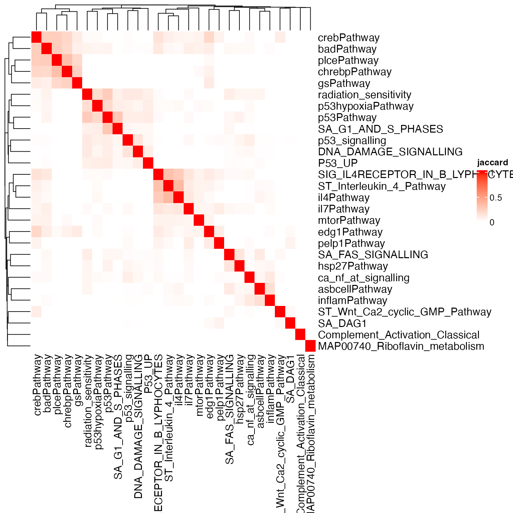
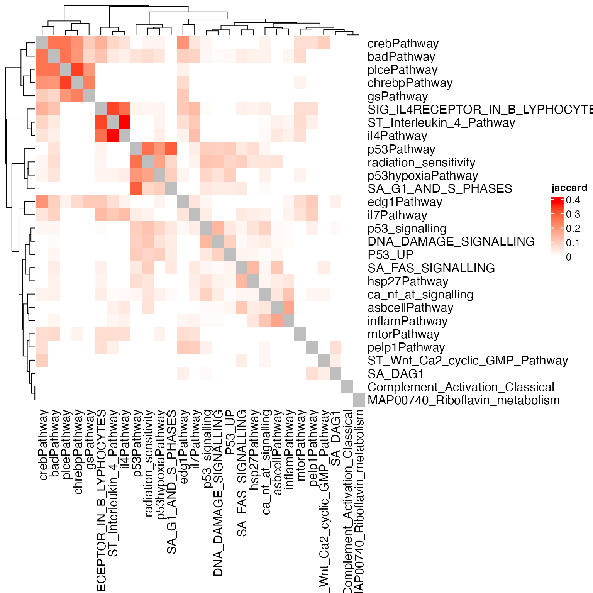
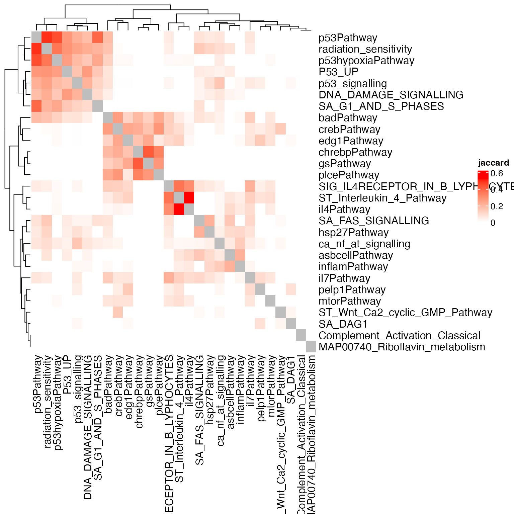
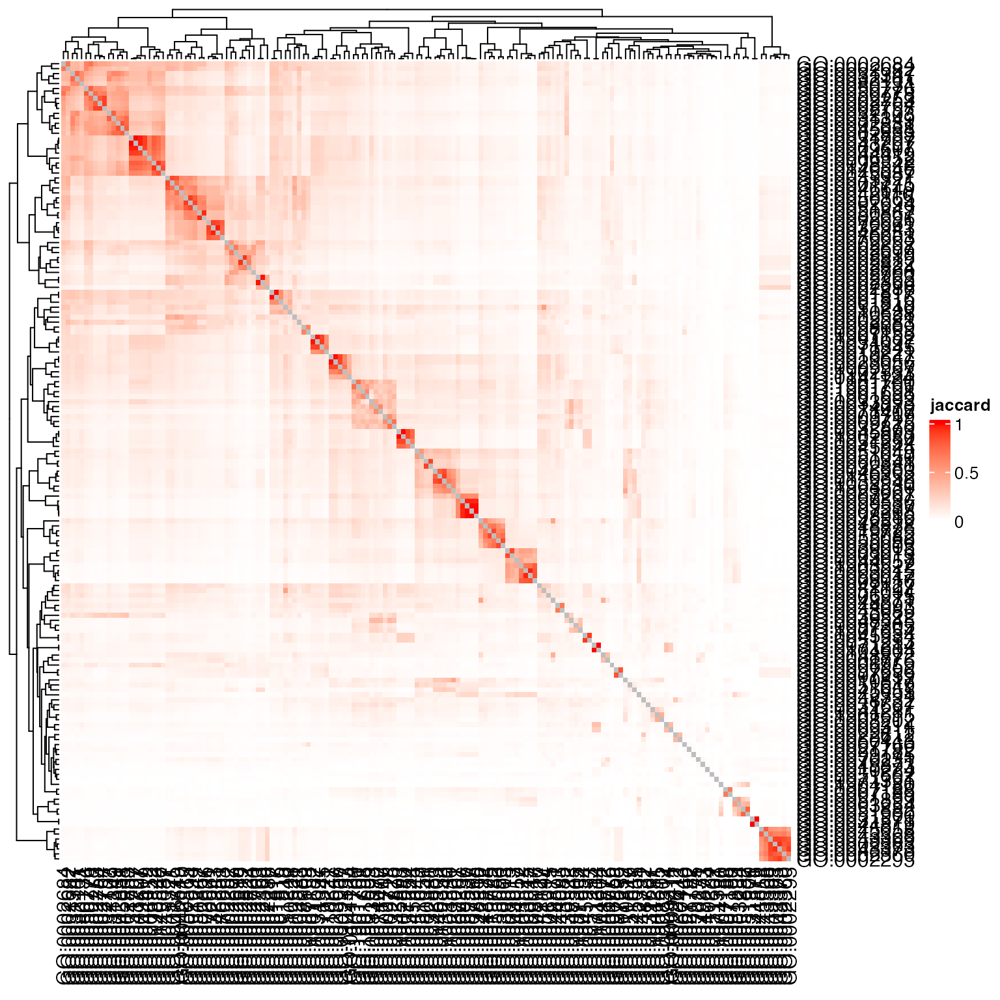
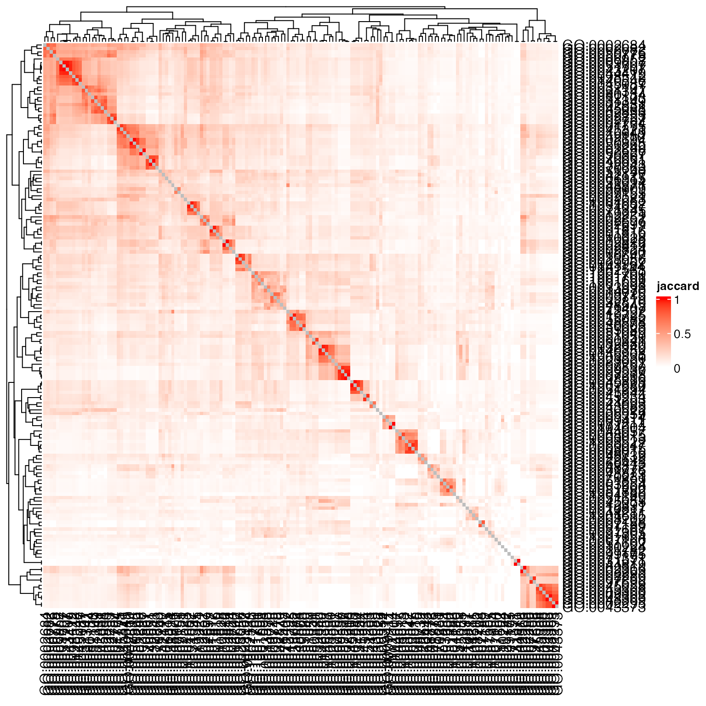
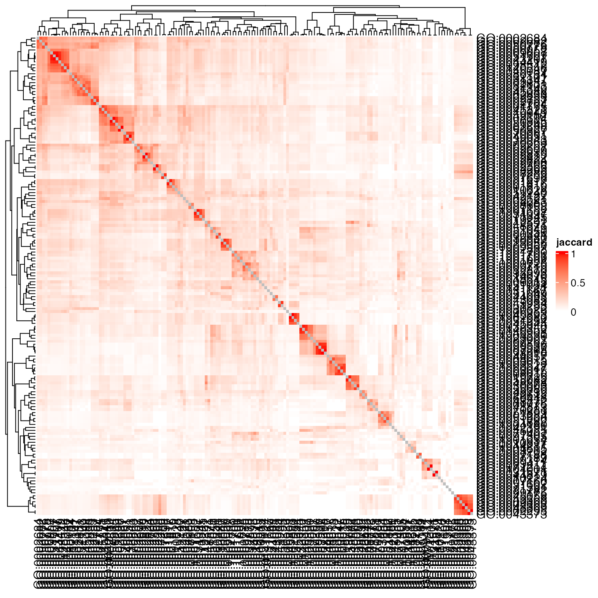
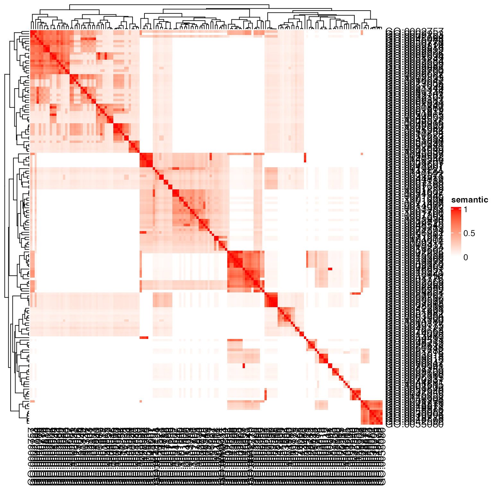
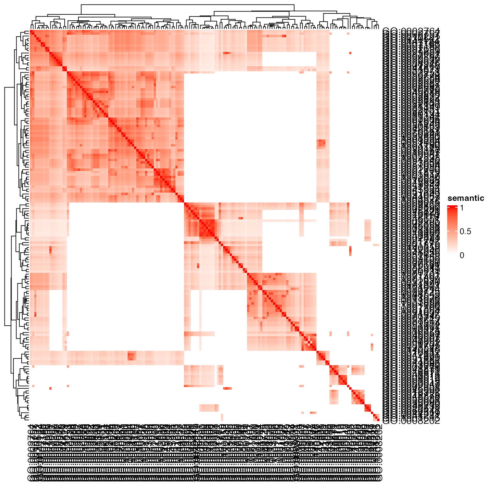

Topic 6-01: Similarity of gene sets
Zuguang Gu z.gu@dkfz.de
2025-05-31
Source:vignettes/topic6_01_similarity.Rmd
topic6_01_similarity.RmdLet’s first apply ORA and generate a list of significant gene sets.
library(GSEAtopics)
data(p53_dataset)
expr = p53_dataset$expr
condition = p53_dataset$condition
gs = p53_dataset$gs
library(genefilter)
tdf = rowttests(expr, factor(condition))
tdf$fdr = p.adjust(tdf$p.value, "BH")
diff = rownames(expr)[abs(tdf$statistic) > 2]
tb_ora = ora(diff, gs, universe = rownames(expr))
sig = tb_ora$gene_set[tb_ora$p_value < 0.05]
length(sig)## [1] 28Count-based method
We first introduce the count-based method, typically the Jaccard coeffcient. The implementation of the Jaccard coefficient is very straightforward.
There are two ways to define two gene sets for calculating Jaccard similarities:
- using the complete gene sets,
- only use differential genes in the two gene sets.
Let’s compare.
k = length(sig)
sm = matrix(nrow = k, ncol = k)
rownames(sm) = colnames(sm) = sig
for(i in 1:(k-1)) {
for(j in (i+1):k) {
sm[i, j] = sm[j, i] = jaccard_coef(gs[[ sig[i] ]], gs[[ sig[j] ]])
}
}
diag(sm) = 1Question: the above implementation is obvious not effcient. Can you try to implement it in a more efficient way?
jaccard_coef_fast = function(x, y) {
v1 = sum(x %in% y)
v2 = length(x) + length(y) - v1
v1/v2
}
# or
library(fastmatch)
jaccard_coef_fast2 = function(x, y) {
v1 = sum(x %fin% y)
v2 = length(x) + length(y) - v1
v1/v2
}The heatmap of the similarities looks like:
library(ComplexHeatmap)
Heatmap(sm, name = "jaccard", col = c("white", "red"))
The overall similarity is in general much weaker than the diagonal
values. Let’s set the diagonal values to NA:

We do the same only comparing differential genes in the pairwise gene sets.
gs2 = lapply(gs[sig], function(x) intersect(x, diff))
k = length(sig)
sm = matrix(nrow = k, ncol = k)
rownames(sm) = colnames(sm) = sig
for(i in 1:(k-1)) {
for(j in (i+1):k) {
sm[i, j] = sm[j, i] = jaccard_coef(gs2[[ sig[i] ]], gs2[[ sig[j] ]])
}
}
diag(sm) = NA
Heatmap(sm, name = "jaccard", col = c("white", "red"))The second similarity heatmap makes more sense since some P53-related gene sets are clustered together. As we care more about the differential genes when compare between gene sets, thus the second way where we only include differential genes is more proper.
Note besides such binary transformation of differential genes, they actually have a gene-level differential score, i.e. t-value or signal-to-noise ratio associated. We can do further to weight genes by their differential expression when calculating the Jaccard coeffcient, which is defined as:
Let’s implement the weighted Jaccard coeffcient:
# w: a named numeric vector where names are genes
jaccard_weighted = function(x, y, w) {
s1 = intersect(x, y)
s2 = union(x, y)
sum(w[s1], na.rm = TRUE)/sum(w[s2], na.rm = TRUE)
}In this example, we use the absolute t-values as the weights.
Let’s try both using the complete gene set and only using differential genes.
k = length(sig)
sm = matrix(nrow = k, ncol = k)
rownames(sm) = colnames(sm) = sig
for(i in 1:(k-1)) {
for(j in (i+1):k) {
sm[i, j] = sm[j, i] = jaccard_weighted(gs[[ sig[i] ]], gs[[ sig[j] ]], w = w)
}
}
diag(sm) = NA
Heatmap(sm, name = "jaccard", col = c("white", "red"))
Using the gene weight, the complete-geneset-based method clusters all P53 related gene sets.
sm = matrix(nrow = k, ncol = k)
rownames(sm) = colnames(sm) = sig
for(i in 1:(k-1)) {
for(j in (i+1):k) {
sm[i, j] = sm[j, i] = jaccard_weighted(gs2[[ sig[i] ]], gs2[[ sig[j] ]], w = w)
}
}
diag(sm) = NA
Heatmap(sm, name = "jaccard", col = c("white", "red"))The improvement is obvious. All P53-related gene sets are clusterd, and the clustering patterns become more clear.
However, when the gene set collection is huge and there are hierarchical relations between gene sets, similarity using Jaccard coeffcient cannot generate clear patterns. We use GO BP as an example.
library(org.Hs.eg.db)
gs_go = get_GO_gene_sets_from_orgdb(org.Hs.eg.db, gene_id_type = "SYMBOL")
tb_ora_go = ora(diff, gs_go)
sig_go = tb_ora_go$gene_set[tb_ora_go$p_adjust < 0.01]We use the jaccard() function that is already
implemented in the GSEAtopics package.
save.image(file = "~/test.RData")
sm = jaccard(gs_go[sig_go])
diag(sm) = NA
Heatmap(sm, name = "jaccard", col = c("white", "red"))
Or only use the DE genes:
gs_go2 = lapply(gs_go[sig_go], function(x) intersect(diff, x))
sm = jaccard(gs_go2)
diag(sm) = NA
Heatmap(sm, name = "jaccard", col = c("white", "red"))
Or add the weight:
k = length(sig_go)
sm = matrix(nrow = k, ncol = k)
rownames(sm) = colnames(sm) = sig_go
sm = jaccard(gs_go2, weight = w)
diag(sm) = NA
Heatmap(sm, name = "jaccard", col = c("white", "red"))
Conclusion: Weighted Jaccard coeffcient (or its variants) is suitable to use when the gene set collection is small and overlap between gene sets are not so big.
Semantic similarity for GO terms
GO is represented as a DAG. For all DAG-based semantic similarity methods, they reply on the depths of terms.
GO.db provides data objects that contains hierarchical relations, which can be used to calculate the depths of term. There are several ways. The following code demonstrates a top-down method using breadth-first traverse.
library(GO.db)
go_depth = function() {
root = "GO:0008150"
lt_children = as.list(GOBPCHILDREN)
n_terms = length(lt_children)
d = rep(0L, n_terms)
names(d) = names(lt_children)
current_nodes = root
while(length(current_nodes)) {
for(cr in current_nodes) {
children = lt_children[[cr]]
if(length(children) && !identical(children, NA)) {
d[children] = pmax(d[children], d[cr] + 1L)
}
}
current_nodes = unique(unlist(lt_children[current_nodes]))
current_nodes = current_nodes[!is.na(current_nodes)]
}
d
}
d = go_depth()Quesion: try to implemnet other method, e.g. using depth-first traversal method.
We demonstrate how to calculate the semantic similarity using the Lin method:
First information content for a given node is calculated as
where is the number of genes annotated to term and is the total number of genes annotationed to the whole GO DAG.
All the genes annotated to GO terms are in the object
org.Hs.egGO2ALLEGS.
lt_anno = as.list(org.Hs.egGO2ALLEGS)
lt_anno = lapply(lt_anno, unique)
total_genes = unique(unlist(lt_anno))And the information content is:
To obtain MICA, we use the object GOBPANCESTOR which
contains all ancestors of terms. Note we need to exclude a special term
called “all”.
lt_ancestor = as.list(GOBPANCESTOR)
lt_ancestor = lapply(lt_ancestor, function(x) x[x != "all"])
common_ancestors = intersect(lt_ancestor[[ sig_go[1] ]], lt_ancestor[[ sig_go[2] ]])MICA is the common ancestor with the highest depth
d[common_ancestors]## GO:0008150 GO:0050896
## 0 1
ic[common_ancestors]## GO:0008150 GO:0050896
## 0.09245232 0.80592476Specially for annotation-based IC, actually depth is not necessarily used to identify MICA, the CA with the highest IC is the MICA since gene annotaiton is also assigned recursively to the root.
The Lin-similarity is:
2*ic["GO:0042221"]/(ic[ sig_go[1] ] + ic[ sig_go[2] ])## GO:0042221
## 0.6722823In the simona package, there are a huge number of senmatic similarity methods implemented. For example, to calculate the similarity from annotation-based method and topology-based methods.
library(simona)
dag = create_ontology_DAG_from_GO_db("BP", org_db = org.Hs.eg.db)
sm = term_sim(dag, sig_go, method = "Sim_Lin_1998")
Heatmap(sm, name = "semantic", col = c("white", "red"))
sm = term_sim(dag, sig_go, method = "Sim_WP_1994")
Heatmap(sm, name = "semantic", col = c("white", "red"))